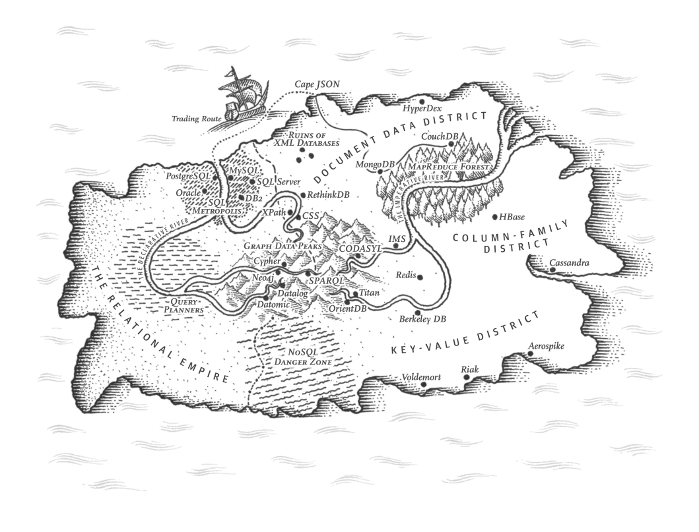
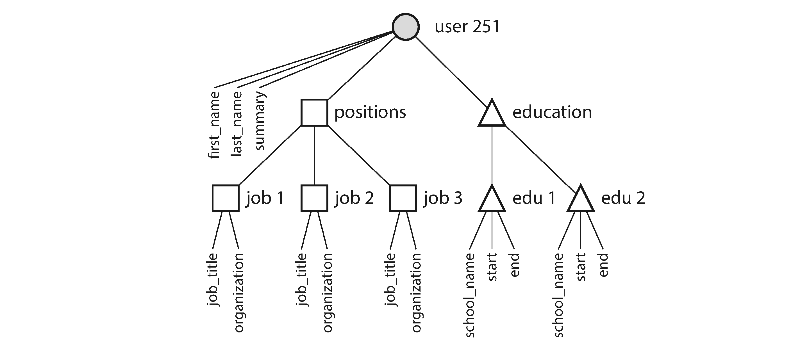
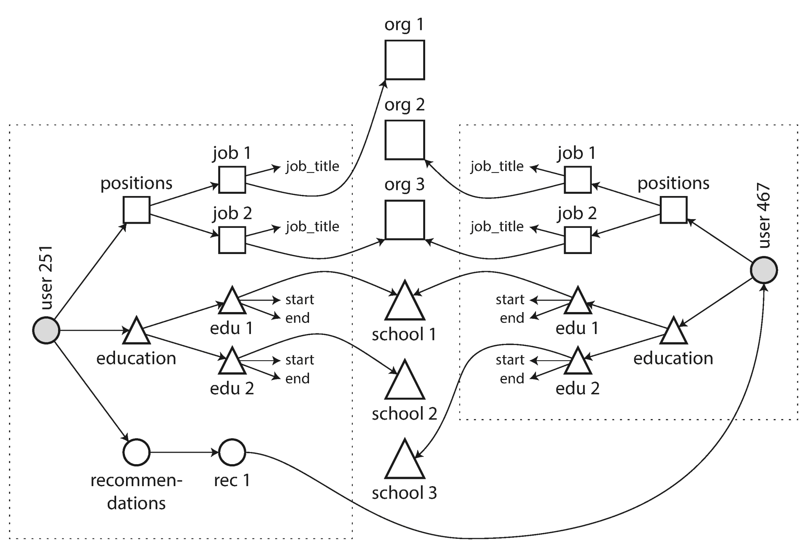
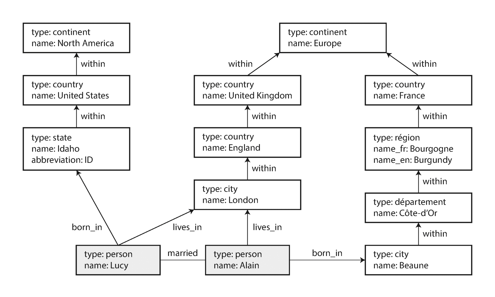
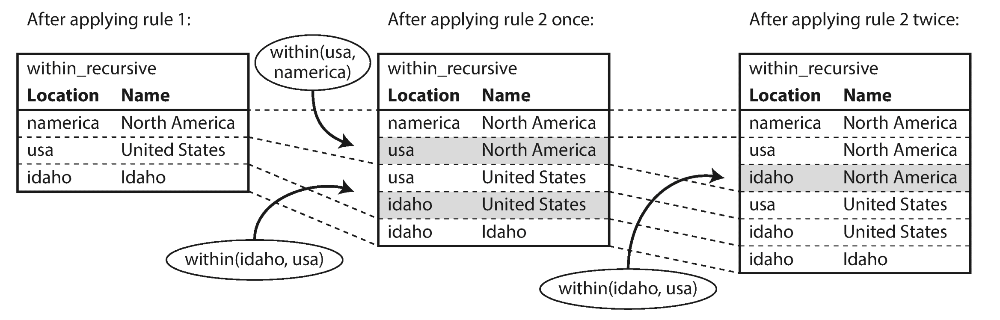

Chapter 2. Data Models and Query Languages
The limits of my language mean the limits of my world.Ludwig Wittgenstein, Tractatus Logico-Philosophicus (1922)

Data models are perhaps the most important part of developing software, because they have such a profound effect: not only on how the software is written, but also on how we think about the problem that we are solving.
Most applications are built by layering one data model on top of another. For each layer, the key question is: how is it represented in terms of the next-lower layer? For example:
- As an application developer, you look at the real world (in which there are people, organizations, goods, actions, money flows, sensors, etc.) and model it in terms of objects or data structures, and APIs that manipulate those data structures. Those structures are often specific to your application.
- When you want to store those data structures, you express them in terms of a general-purpose data model, such as JSON or XML documents, tables in a relational database, or a graph model.
- The engineers who built your database software decided on a way of representing that JSON/XML/relational/graph data in terms of bytes in memory, on disk, or on a network. The representation may allow the data to be queried, searched, manipulated, and processed in various ways.
- On yet lower levels, hardware engineers have figured out how to represent bytes in terms of electrical currents, pulses of light, magnetic fields, and more.
In a complex application there may be more intermediary levels, such as APIs built upon APIs, but the basic idea is still the same: each layer hides the complexity of the layers below it by providing a clean data model. These abstractions allow different groups of people — for example, the engineers at the database vendor and the application developers using their database — to work together effectively.
There are many different kinds of data models, and every data model embodies assumptions about how it is going to be used. Some kinds of usage are easy and some are not supported; some operations are fast and some perform badly; some data transformations feel natural and some are awkward.
It can take a lot of effort to master just one data model (think how many books there are on relational data modeling). Building software is hard enough, even when working with just one data model and without worrying about its inner workings. But since the data model has such a profound effect on what the software above it can and can’t do, it’s important to choose one that is appropriate to the application.
In this chapter we will look at a range of general-purpose data models for data storage and querying (point 2 in the preceding list). In particular, we will compare the relational model, the document model, and a few graph-based data models. We will also look at various query languages and compare their use cases. In Chapter 3 we will discuss how storage engines work; that is, how these data models are actually implemented (point 3 in the list).
Relational Model Versus Document Model
The best-known data model today is probably that of SQL, based on the relational model proposed by Edgar Codd in 1970 [1 ]: data is organized into relations (called tables in SQL), where each relation is an unordered collection of tuples (rows in SQL).
The relational model was a theoretical proposal, and many people at the time doubted whether it could be implemented efficiently. However, by the mid-1980s, relational database management systems (RDBMSes) and SQL had become the tools of choice for most people who needed to store and query data with some kind of regular structure. The dominance of relational databases has lasted around 25‒30 years — an eternity in computing history.
The roots of relational databases lie in business data processing , which was performed on mainframe computers in the 1960s and ’70s. The use cases appear mundane from today’s perspective: typically transaction processing (entering sales or banking transactions, airline reservations, stock-keeping in warehouses) and batch processing (customer invoicing, payroll, reporting).
Other databases at that time forced application developers to think a lot about the internal representation of the data in the database. The goal of the relational model was to hide that implementation detail behind a cleaner interface.
Over the years, there have been many competing approaches to data storage and querying. In the 1970s and early 1980s, the network model and the hierarchical model were the main alternatives, but the relational model came to dominate them. Object databases came and went again in the late 1980s and early 1990s. XML databases appeared in the early 2000s, but have only seen niche adoption. Each competitor to the relational model generated a lot of hype in its time, but it never lasted [2 ].
As computers became vastly more powerful and networked, they started being used for increasingly diverse purposes. And remarkably, relational databases turned out to generalize very well, beyond their original scope of business data processing, to a broad variety of use cases. Much of what you see on the web today is still powered by relational databases, be it online publishing, discussion, social networking, ecommerce, games, software-as-a-service productivity applications, or much more.
The Birth of NoSQL
Now, in the 2010s, NoSQL is the latest attempt to overthrow the relational model’s dominance. The name “NoSQL” is unfortunate, since it doesn’t actually refer to any particular technology — it was originally intended simply as a catchy Twitter hashtag for a meetup on open source, distributed, nonrelational databases in 2009 [3 ]. Nevertheless, the term struck a nerve and quickly spread through the web startup community and beyond. A number of interesting database systems are now associated with the #NoSQL hashtag, and it has been retroactively reinterpreted as Not Only SQL [4 ].
There are several driving forces behind the adoption of NoSQL databases, including:
- A need for greater scalability than relational databases can easily achieve, including very large datasets or very high write throughput
- A widespread preference for free and open source software over commercial database products
- Specialized query operations that are not well supported by the relational model
- Frustration with the restrictiveness of relational schemas, and a desire for a more dynamic and expressive data model [5 ]
Different applications have different requirements, and the best choice of technology for one use case may well be different from the best choice for another use case. It therefore seems likely that in the foreseeable future, relational databases will continue to be used alongside a broad variety of nonrelational datastores — an idea that is sometimes called polyglot persistence [3 ].
The Object-Relational Mismatch
Most application development today is done in object-oriented programming languages, which leads to a common criticism of the SQL data model: if data is stored in relational tables, an awkward translation layer is required between the objects in the application code and the database model of tables, rows, and columns. The disconnect between the models is sometimes called an impedance mismatch . i
Object-relational mapping (ORM) frameworks like ActiveRecord and Hibernate reduce the amount of boilerplate code required for this translation layer, but they can’t completely hide the differences between the two models.
For example, Figure 2-1
illustrates how a résumé (a LinkedIn profile) could be expressed in a relational schema. The profile as a whole can be identified by a unique identifier, user_id
. Fields like first_name
and last_name
appear exactly once per user, so they can be modeled as columns on the users
table. However, most people have had more than one job in their career (positions), and people may have varying numbers of periods of education and any number of pieces of contact information. There is a one-to-many relationship from the user to these items, which can be represented in various ways:
- In the traditional SQL model (prior to SQL:1999), the most common normalized representation is to put positions, education, and contact information in separate tables, with a foreign key reference to the
userstable, as in Figure 2-1 . - Later versions of the SQL standard added support for structured datatypes and XML data; this allowed multi-valued data to be stored within a single row, with support for querying and indexing inside those documents. These features are supported to varying degrees by Oracle, IBM DB2, MS SQL Server, and PostgreSQL [6 , 7 ]. A JSON datatype is also supported by several databases, including IBM DB2, MySQL, and PostgreSQL [8 ].
- A third option is to encode jobs, education, and contact info as a JSON or XML document, store it on a text column in the database, and let the application interpret its structure and content. In this setup, you typically cannot use the database to query for values inside that encoded column.
Figure 2-1. Representing a LinkedIn profile using a relational schema. Photo of Bill Gates courtesy of Wikimedia Commons, Ricardo Stuckert, Agência Brasil.
For a data structure like a résumé, which is mostly a self-contained document , a JSON representation can be quite appropriate: see Example 2-1 . JSON has the appeal of being much simpler than XML. Document-oriented databases like MongoDB [9 ], RethinkDB [10 ], CouchDB [11 ], and Espresso [12 ] support this data model.
Example 2-1. Representing a LinkedIn profile as a JSON document
{"user_id":251,"first_name":"Bill","last_name":"Gates","summary":"Co-chair of the Bill & Melinda Gates... Active blogger.","region_id":"us:91","industry_id":131,"photo_url":"/p/7/000/253/05b/308dd6e.jpg","positions":[{"job_title":"Co-chair","organization":"Bill & Melinda Gates Foundation"},{"job_title":"Co-founder, Chairman","organization":"Microsoft"}],"education":[{"school_name":"Harvard University","start":1973,"end":1975},{"school_name":"Lakeside School, Seattle","start":null,"end":null}],"contact_info":{"blog":"http://thegatesnotes.com","twitter":"http://twitter.com/BillGates"}}
Some developers feel that the JSON model reduces the impedance mismatch between the application code and the storage layer. However, as we shall see in Chapter 4 , there are also problems with JSON as a data encoding format. The lack of a schema is often cited as an advantage; we will discuss this in “Schema flexibility in the document model” .
The JSON representation has better locality
than the multi-table schema in Figure 2-1
. If you want to fetch a profile in the relational example, you need to either perform multiple queries (query each table by user_id
) or perform a messy multi-way join between the users
table and its subordinate tables. In the JSON representation, all the relevant information is in one place, and one query is sufficient.
The one-to-many relationships from the user profile to the user’s positions, educational history, and contact information imply a tree structure in the data, and the JSON representation makes this tree structure explicit (see Figure 2-2 ).

Figure 2-2. One-to-many relationships forming a tree structure.
Many-to-One and Many-to-Many Relationships
In Example 2-1
in the preceding section, region_id
and industry_id
are given as IDs, not as plain-text strings "Greater Seattle Area"
and "Philanthropy"
. Why?
If the user interface has free-text fields for entering the region and the industry, it makes sense to store them as plain-text strings. But there are advantages to having standardized lists of geographic regions and industries, and letting users choose from a drop-down list or autocompleter:
- Consistent style and spelling across profiles
- Avoiding ambiguity (e.g., if there are several cities with the same name)
- Ease of updating — the name is stored in only one place, so it is easy to update across the board if it ever needs to be changed (e.g., change of a city name due to political events)
- Localization support — when the site is translated into other languages, the standardized lists can be localized, so the region and industry can be displayed in the viewer’s language
- Better search — e.g., a search for philanthropists in the state of Washington can match this profile, because the list of regions can encode the fact that Seattle is in Washington (which is not apparent from the string
"Greater Seattle Area")
Whether you store an ID or a text string is a question of duplication. When you use an ID, the information that is meaningful to humans (such as the word Philanthropy ) is stored in only one place, and everything that refers to it uses an ID (which only has meaning within the database). When you store the text directly, you are duplicating the human-meaningful information in every record that uses it.
The advantage of using an ID is that because it has no meaning to humans, it never needs to change: the ID can remain the same, even if the information it identifies changes. Anything that is meaningful to humans may need to change sometime in the future — and if that information is duplicated, all the redundant copies need to be updated. That incurs write overheads, and risks inconsistencies (where some copies of the information are updated but others aren’t). Removing such duplication is the key idea behind normalization in databases. ii
Note
Database administrators and developers love to argue about normalization and denormalization, but we will suspend judgment for now. In Part III of this book we will return to this topic and explore systematic ways of dealing with caching, denormalization, and derived data.
Unfortunately, normalizing this data requires many-to-one relationships (many people live in one particular region, many people work in one particular industry), which don’t fit nicely into the document model. In relational databases, it’s normal to refer to rows in other tables by ID, because joins are easy. In document databases, joins are not needed for one-to-many tree structures, and support for joins is often weak. iii
If the database itself does not support joins, you have to emulate a join in application code by making multiple queries to the database. (In this case, the lists of regions and industries are probably small and slow-changing enough that the application can simply keep them in memory. But nevertheless, the work of making the join is shifted from the database to the application code.)
Moreover, even if the initial version of an application fits well in a join-free document model, data has a tendency of becoming more interconnected as features are added to applications. For example, consider some changes we could make to the résumé example:
In the previous description,organization(the company where the user worked) andschool_name(where they studied) are just strings. Perhaps they should be references to entities instead? Then each organization, school, or university could have its own web page (with logo, news feed, etc.); each résumé could link to the organizations and schools that it mentions, and include their logos and other information (see Figure 2-3 for an example from LinkedIn).
Say you want to add a new feature: one user can write a recommendation for another user. The recommendation is shown on the résumé of the user who was recommended, together with the name and photo of the user making the recommendation. If the recommender updates their photo, any recommendations they have written need to reflect the new photo. Therefore, the recommendation should have a reference to the author’s profile.
Figure 2-3. The company name is not just a string, but a link to a company entity. Screenshot of linkedin.com.
Figure 2-4 illustrates how these new features require many-to-many relationships. The data within each dotted rectangle can be grouped into one document, but the references to organizations, schools, and other users need to be represented as references, and require joins when queried.

Figure 2-4. Extending résumés with many-to-many relationships.
Are Document Databases Repeating History?
While many-to-many relationships and joins are routinely used in relational databases, document databases and NoSQL reopened the debate on how best to represent such relationships in a database. This debate is much older than NoSQL — in fact, it goes back to the very earliest computerized database systems.
The most popular database for business data processing in the 1970s was IBM’s Information Management System (IMS), originally developed for stock-keeping in the Apollo space program and first commercially released in 1968 [13 ]. It is still in use and maintained today, running on OS/390 on IBM mainframes [14 ].
The design of IMS used a fairly simple data model called the hierarchical model , which has some remarkable similarities to the JSON model used by document databases [2 ]. It represented all data as a tree of records nested within records, much like the JSON structure of Figure 2-2 .
Like document databases, IMS worked well for one-to-many relationships, but it made many-to-many relationships difficult, and it didn’t support joins. Developers had to decide whether to duplicate (denormalize) data or to manually resolve references from one record to another. These problems of the 1960s and ’70s were very much like the problems that developers are running into with document databases today [15 ].
Various solutions were proposed to solve the limitations of the hierarchical model. The two most prominent were the relational model (which became SQL, and took over the world) and the network model (which initially had a large following but eventually faded into obscurity). The “great debate” between these two camps lasted for much of the 1970s [2 ].
Since the problem that the two models were solving is still so relevant today, it’s worth briefly revisiting this debate in today’s light.
The network model
The network model was standardized by a committee called the Conference on Data Systems Languages (CODASYL) and implemented by several different database vendors; it is also known as the CODASYL model [16 ].
The CODASYL model was a generalization of the hierarchical model. In the tree structure of the hierarchical model, every record has exactly one parent; in the network model, a record could have multiple parents. For example, there could be one record for the "Greater Seattle Area"
region, and every user who lived in that region could be linked to it. This allowed many-to-one and many-to-many relationships to be modeled.
The links between records in the network model were not foreign keys, but more like pointers in a programming language (while still being stored on disk). The only way of accessing a record was to follow a path from a root record along these chains of links. This was called an access path .
In the simplest case, an access path could be like the traversal of a linked list: start at the head of the list, and look at one record at a time until you find the one you want. But in a world of many-to-many relationships, several different paths can lead to the same record, and a programmer working with the network model had to keep track of these different access paths in their head.
A query in CODASYL was performed by moving a cursor through the database by iterating over lists of records and following access paths. If a record had multiple parents (i.e., multiple incoming pointers from other records), the application code had to keep track of all the various relationships. Even CODASYL committee members admitted that this was like navigating around an n -dimensional data space [17 ].
Although manual access path selection was able to make the most efficient use of the very limited hardware capabilities in the 1970s (such as tape drives, whose seeks are extremely slow), the problem was that they made the code for querying and updating the database complicated and inflexible. With both the hierarchical and the network model, if you didn’t have a path to the data you wanted, you were in a difficult situation. You could change the access paths, but then you had to go through a lot of handwritten database query code and rewrite it to handle the new access paths. It was difficult to make changes to an application’s data model.
The relational model
What the relational model did, by contrast, was to lay out all the data in the open: a relation (table) is simply a collection of tuples (rows), and that’s it. There are no labyrinthine nested structures, no complicated access paths to follow if you want to look at the data. You can read any or all of the rows in a table, selecting those that match an arbitrary condition. You can read a particular row by designating some columns as a key and matching on those. You can insert a new row into any table without worrying about foreign key relationships to and from other tables. iv
In a relational database, the query optimizer automatically decides which parts of the query to execute in which order, and which indexes to use. Those choices are effectively the “access path,” but the big difference is that they are made automatically by the query optimizer, not by the application developer, so we rarely need to think about them.
If you want to query your data in new ways, you can just declare a new index, and queries will automatically use whichever indexes are most appropriate. You don’t need to change your queries to take advantage of a new index. (See also “Query Languages for Data” .) The relational model thus made it much easier to add new features to applications.
Query optimizers for relational databases are complicated beasts, and they have consumed many years of research and development effort [18 ]. But a key insight of the relational model was this: you only need to build a query optimizer once, and then all applications that use the database can benefit from it. If you don’t have a query optimizer, it’s easier to handcode the access paths for a particular query than to write a general-purpose optimizer — but the general-purpose solution wins in the long run.
Comparison to document databases
Document databases reverted back to the hierarchical model in one aspect: storing nested records (one-to-many relationships, like positions
, education
, and
contact_info
in Figure 2-1
) within their parent record rather than in a separate table.
However, when it comes to representing many-to-one and many-to-many relationships, relational and document databases are not fundamentally different: in both cases, the related item is referenced by a unique identifier, which is called a foreign key in the relational model and a document reference in the document model [9 ]. That identifier is resolved at read time by using a join or follow-up queries. To date, document databases have not followed the path of CODASYL.
Relational Versus Document Databases Today
There are many differences to consider when comparing relational databases to document databases, including their fault-tolerance properties (see Chapter 5 ) and handling of concurrency (see Chapter 7 ). In this chapter, we will concentrate only on the differences in the data model.
The main arguments in favor of the document data model are schema flexibility, better performance due to locality, and that for some applications it is closer to the data structures used by the application. The relational model counters by providing better support for joins, and many-to-one and many-to-many relationships.
Which data model leads to simpler application code?
If the data in your application has a document-like structure (i.e., a tree of one-to-many relationships, where typically the entire tree is loaded at once), then it’s probably a good idea to use a document model. The relational technique of shredding
— splitting a document-like structure into multiple tables (like positions
, education
, and contact_info
in Figure 2-1
) — can lead to cumbersome schemas and unnecessarily complicated application code.
The document model has limitations: for example, you cannot refer directly to a nested item within a document, but instead you need to say something like “the second item in the list of positions for user 251” (much like an access path in the hierarchical model). However, as long as documents are not too deeply nested, that is not usually a problem.
The poor support for joins in document databases may or may not be a problem, depending on the application. For example, many-to-many relationships may never be needed in an analytics application that uses a document database to record which events occurred at which time [19 ].
However, if your application does use many-to-many relationships, the document model becomes less appealing. It’s possible to reduce the need for joins by denormalizing, but then the application code needs to do additional work to keep the denormalized data consistent. Joins can be emulated in application code by making multiple requests to the database, but that also moves complexity into the application and is usually slower than a join performed by specialized code inside the database. In such cases, using a document model can lead to significantly more complex application code and worse performance [15 ].
It’s not possible to say in general which data model leads to simpler application code; it depends on the kinds of relationships that exist between data items. For highly interconnected data, the document model is awkward, the relational model is acceptable, and graph models (see “Graph-Like Data Models” ) are the most natural.
Schema flexibility in the document model
Most document databases, and the JSON support in relational databases, do not enforce any schema on the data in documents. XML support in relational databases usually comes with optional schema validation. No schema means that arbitrary keys and values can be added to a document, and when reading, clients have no guarantees as to what fields the documents may contain.
Document databases are sometimes called schemaless , but that’s misleading, as the code that reads the data usually assumes some kind of structure — i.e., there is an implicit schema, but it is not enforced by the database [20 ]. A more accurate term is schema-on-read (the structure of the data is implicit, and only interpreted when the data is read), in contrast with schema-on-write (the traditional approach of relational databases, where the schema is explicit and the database ensures all written data conforms to it) [21 ].
Schema-on-read is similar to dynamic (runtime) type checking in programming languages, whereas schema-on-write is similar to static (compile-time) type checking. Just as the advocates of static and dynamic type checking have big debates about their relative merits [22 ], enforcement of schemas in database is a contentious topic, and in general there’s no right or wrong answer.
The difference between the approaches is particularly noticeable in situations where an application wants to change the format of its data. For example, say you are currently storing each user’s full name in one field, and you instead want to store the first name and last name separately [23 ]. In a document database, you would just start writing new documents with the new fields and have code in the application that handles the case when old documents are read. For example:
if(user&&user.name&&!user.first_name){// Documents written before Dec 8, 2013 don't have first_nameuser.first_name=user.name.split(" ")[0];}
On the other hand, in a “statically typed” database schema, you would typically perform a migration along the lines of:
ALTERTABLEusersADDCOLUMNfirst_nametext;UPDATEusersSETfirst_name=split_part(name,' ',1);-- PostgreSQLUPDATEusersSETfirst_name=substring_index(name,' ',1);-- MySQL
Schema changes have a bad reputation of being slow and requiring downtime. This reputation is not entirely deserved: most relational database systems execute the ALTER TABLE
statement in a few milliseconds. MySQL is a notable exception — it copies the entire table on ALTER TABLE
, which can mean minutes or even hours of downtime when altering a large table — although various tools exist to work around this limitation [24
, 25
, 26
].
Running the UPDATE
statement on a large table is likely to be slow on any database, since every row needs to be rewritten. If that is not acceptable, the application can leave first_name
set to its default of NULL
and fill it in at read time, like it would with a document database.
The schema-on-read approach is advantageous if the items in the collection don’t all have the same structure for some reason (i.e., the data is heterogeneous) — for example, because:
- There are many different types of objects, and it is not practical to put each type of object in its own table.
- The structure of the data is determined by external systems over which you have no control and which may change at any time.
In situations like these, a schema may hurt more than it helps, and schemaless documents can be a much more natural data model. But in cases where all records are expected to have the same structure, schemas are a useful mechanism for documenting and enforcing that structure. We will discuss schemas and schema evolution in more detail in Chapter 4 .
Data locality for queries
A document is usually stored as a single continuous string, encoded as JSON, XML, or a binary variant thereof (such as MongoDB’s BSON). If your application often needs to access the entire document (for example, to render it on a web page), there is a performance advantage to this storage locality . If data is split across multiple tables, like in Figure 2-1 , multiple index lookups are required to retrieve it all, which may require more disk seeks and take more time.
The locality advantage only applies if you need large parts of the document at the same time. The database typically needs to load the entire document, even if you access only a small portion of it, which can be wasteful on large documents. On updates to a document, the entire document usually needs to be rewritten — only modifications that don’t change the encoded size of a document can easily be performed in place [19 ]. For these reasons, it is generally recommended that you keep documents fairly small and avoid writes that increase the size of a document [9 ]. These performance limitations significantly reduce the set of situations in which document databases are useful.
It’s worth pointing out that the idea of grouping related data together for locality is not limited to the document model. For example, Google’s Spanner database offers the same locality properties in a relational data model, by allowing the schema to declare that a table’s rows should be interleaved (nested) within a parent table [27 ]. Oracle allows the same, using a feature called multi-table index cluster tables [28 ]. The column-family concept in the Bigtable data model (used in Cassandra and HBase) has a similar purpose of managing locality [29 ].
We will also see more on locality in Chapter 3 .
Convergence of document and relational databases
Most relational database systems (other than MySQL) have supported XML since the mid-2000s. This includes functions to make local modifications to XML documents and the ability to index and query inside XML documents, which allows applications to use data models very similar to what they would do when using a document database.
PostgreSQL since version 9.3 [8 ], MySQL since version 5.7, and IBM DB2 since version 10.5 [30 ] also have a similar level of support for JSON documents. Given the popularity of JSON for web APIs, it is likely that other relational databases will follow in their footsteps and add JSON support.
On the document database side, RethinkDB supports relational-like joins in its query language, and some MongoDB drivers automatically resolve database references (effectively performing a client-side join, although this is likely to be slower than a join performed in the database since it requires additional network round-trips and is less optimized).
It seems that relational and document databases are becoming more similar over time, and that is a good thing: the data models complement each other. v If a database is able to handle document-like data and also perform relational queries on it, applications can use the combination of features that best fits their needs.
A hybrid of the relational and document models is a good route for databases to take in the future.
Query Languages for Data
When the relational model was introduced, it included a new way of querying data: SQL is a declarative query language, whereas IMS and CODASYL queried the database using imperative code. What does that mean?
Many commonly used programming languages are imperative. For example, if you have a list of animal species, you might write something like this to return only the sharks in the list:
functiongetSharks(){varsharks=[];for(vari=0;i<animals.length;i++){if(animals[i].family==="Sharks"){sharks.push(animals[i]);}}returnsharks;}
In the relational algebra, you would instead write:
sharks = σfamily = “Sharks” (animals)
where σ (the Greek letter sigma) is the selection operator, returning only those animals that match the condition family = “Sharks” .
When SQL was defined, it followed the structure of the relational algebra fairly closely:
SELECT*FROManimalsWHEREfamily='Sharks';
An imperative language tells the computer to perform certain operations in a certain order. You can imagine stepping through the code line by line, evaluating conditions, updating variables, and deciding whether to go around the loop one more time.
In a declarative query language, like SQL or relational algebra, you just specify the pattern of the data you want — what conditions the results must meet, and how you want the data to be transformed (e.g., sorted, grouped, and aggregated) — but not how to achieve that goal. It is up to the database system’s query optimizer to decide which indexes and which join methods to use, and in which order to execute various parts of the query.
A declarative query language is attractive because it is typically more concise and easier to work with than an imperative API. But more importantly, it also hides implementation details of the database engine, which makes it possible for the database system to introduce performance improvements without requiring any changes to queries.
For example, in the imperative code shown at the beginning of this section, the list of animals appears in a particular order. If the database wants to reclaim unused disk space behind the scenes, it might need to move records around, changing the order in which the animals appear. Can the database do that safely, without breaking queries?
The SQL example doesn’t guarantee any particular ordering, and so it doesn’t mind if the order changes. But if the query is written as imperative code, the database can never be sure whether the code is relying on the ordering or not. The fact that SQL is more limited in functionality gives the database much more room for automatic optimizations.
Finally, declarative languages often lend themselves to parallel execution. Today, CPUs are getting faster by adding more cores, not by running at significantly higher clock speeds than before [31 ]. Imperative code is very hard to parallelize across multiple cores and multiple machines, because it specifies instructions that must be performed in a particular order. Declarative languages have a better chance of getting faster in parallel execution because they specify only the pattern of the results, not the algorithm that is used to determine the results. The database is free to use a parallel implementation of the query language, if appropriate [32 ].
Declarative Queries on the Web
The advantages of declarative query languages are not limited to just databases. To illustrate the point, let’s compare declarative and imperative approaches in a completely different environment: a web browser.
Say you have a website about animals in the ocean. The user is currently viewing the page on sharks, so you mark the navigation item “Sharks” as currently selected, like this:
<ul><liclass="selected">
<p>Sharks</p><ul><li>Great White Shark</li><li>Tiger Shark</li><li>Hammerhead Shark</li></ul></li><li><p>Whales</p><ul><li>Blue Whale</li><li>Humpback Whale</li><li>Fin Whale</li></ul></li></ul>
The selected item is marked with the CSS class"selected".
<p>Sharks</p>is the title of the currently selected page.
Now say you want the title of the currently selected page to have a blue background, so that it is visually highlighted. This is easy, using CSS:
li.selected>p{background-color:blue;}
Here the CSS selector li.selected > p
declares the pattern of elements to which we want to apply the blue style: namely, all <p>
elements whose direct parent is an <li>
element with a CSS class of selected
. The element <p>Sharks</p>
in the example matches this pattern, but <p>Whales</p>
does not match because its <li>
parent lacks class="selected"
.
If you were using XSL instead of CSS, you could do something similar:
<xsl:templatematch="li[@class='selected']/p"><fo:blockbackground-color="blue"><xsl:apply-templates/></fo:block></xsl:template>
Here, the XPath expression li[@class='selected']/p
is equivalent to the CSS selector li.selected > p
in the previous example. What CSS and XSL have in common is that they are both declarative
languages for specifying the styling of a document.
Imagine what life would be like if you had to use an imperative approach. In JavaScript, using the core Document Object Model (DOM) API, the result might look something like this:
varliElements=document.getElementsByTagName("li");for(vari=0;i<liElements.length;i++){if(liElements[i].className==="selected"){varchildren=liElements[i].childNodes;for(varj=0;j<children.length;j++){varchild=children[j];if(child.nodeType===Node.ELEMENT_NODE&&child.tagName==="P"){child.setAttribute("style","background-color: blue");}}}}
This JavaScript imperatively sets the element <p>Sharks</p>
to have a blue background, but the code is awful. Not only is it much longer and harder to understand than the CSS and XSL equivalents, but it also has some serious problems:
- If the
selectedclass is removed (e.g., because the user clicks a different page), the blue color won’t be removed, even if the code is rerun — and so the item will remain highlighted until the entire page is reloaded. With CSS, the browser automatically detects when theli.selected > prule no longer applies and removes the blue background as soon as theselectedclass is removed. - If you want to take advantage of a new API, such as
document.getElementsByClassName("selected")or evendocument.evaluate()— which may improve performance — you have to rewrite the code. On the other hand, browser vendors can improve the performance of CSS and XPath without breaking compatibility.
In a web browser, using declarative CSS styling is much better than manipulating styles imperatively in JavaScript. Similarly, in databases, declarative query languages like SQL turned out to be much better than imperative query APIs. vi
MapReduce Querying
MapReduce is a programming model for processing large amounts of data in bulk across many machines, popularized by Google [33 ]. A limited form of MapReduce is supported by some NoSQL datastores, including MongoDB and CouchDB, as a mechanism for performing read-only queries across many documents.
MapReduce in general is described in more detail in Chapter 10 . For now, we’ll just briefly discuss MongoDB’s use of the model.
MapReduce is neither a declarative query language nor a fully imperative query API, but somewhere in between: the logic of the query is expressed with snippets of code, which are called repeatedly by the processing framework. It is based on the map
(also known as collect
) and reduce
(also known as fold
or inject
) functions that exist in many functional programming languages.
To give an example, imagine you are a marine biologist, and you add an observation record to your database every time you see animals in the ocean. Now you want to generate a report saying how many sharks you have sighted per month.
In PostgreSQL you might express that query like this:
SELECTdate_trunc('month',observation_timestamp)ASobservation_month,sum(num_animals)AStotal_animalsFROMobservationsWHEREfamily='Sharks'GROUPBYobservation_month;
Thedate_trunc('month', timestamp)function determines the calendar month containingtimestamp, and returns another timestamp representing the beginning of that month. In other words, it rounds a timestamp down to the nearest month.
This query first filters the observations to only show species in the Sharks
family, then groups the observations by the calendar month in which they occurred, and finally adds up the number of animals seen in all observations in that month.
The same can be expressed with MongoDB’s MapReduce feature as follows:
db.observations.mapReduce(functionmap(){varyear=this.observationTimestamp.getFullYear();varmonth=this.observationTimestamp.getMonth()+1;emit(year+"-"+month,this.numAnimals);},functionreduce(key,values){returnArray.sum(values);},{query:{family:"Sharks"},out:"monthlySharkReport"});
The filter to consider only shark species can be specified declaratively (this is a MongoDB-specific extension to MapReduce).
The JavaScript functionmapis called once for every document that matchesquery, withthisset to the document object.
Themapfunction emits a key (a string consisting of year and month, such as"2013-12"or"2014-1") and a value (the number of animals in that observation).
The key-value pairs emitted bymapare grouped by key. For all key-value pairs with the same key (i.e., the same month and year), thereducefunction is called once.
Thereducefunction adds up the number of animals from all observations in a particular month.
The final output is written to the collectionmonthlySharkReport.
For example, say the observations
collection contains these two documents:
{observationTimestamp:Date.parse("Mon, 25 Dec 1995 12:34:56 GMT"),family:"Sharks",species:"Carcharodon carcharias",numAnimals:3}{observationTimestamp:Date.parse("Tue, 12 Dec 1995 16:17:18 GMT"),family:"Sharks",species:"Carcharias taurus",numAnimals:4}
The map
function would be called once for each document, resulting in emit("1995-12", 3)
and emit("1995-12", 4)
. Subsequently, the reduce
function would be called with reduce("1995-12", [3, 4])
, returning 7
.
The map
and reduce
functions are somewhat restricted in what they are allowed to do. They must be pure
functions, which means they only use the data that is passed to them as input, they cannot perform additional database queries, and they must not have any side effects. These restrictions allow the database to run the functions anywhere, in any order, and rerun them on failure. However, they are nevertheless powerful: they can parse strings, call library functions, perform calculations, and more.
MapReduce is a fairly low-level programming model for distributed execution on a cluster of machines. Higher-level query languages like SQL can be implemented as a pipeline of MapReduce operations (see Chapter 10 ), but there are also many distributed implementations of SQL that don’t use MapReduce. Note there is nothing in SQL that constrains it to running on a single machine, and MapReduce doesn’t have a monopoly on distributed query execution.
Being able to use JavaScript code in the middle of a query is a great feature for advanced queries, but it’s not limited to MapReduce — some SQL databases can be extended with JavaScript functions too [34 ].
A usability problem with MapReduce is that you have to write two carefully coordinated JavaScript functions, which is often harder than writing a single query. Moreover, a declarative query language offers more opportunities for a query optimizer to improve the performance of a query. For these reasons, MongoDB 2.2 added support for a declarative query language called the aggregation pipeline [9 ]. In this language, the same shark-counting query looks like this:
db.observations.aggregate([{$match:{family:"Sharks"}},{$group:{_id:{year:{$year:"$observationTimestamp"},month:{$month:"$observationTimestamp"}},totalAnimals:{$sum:"$numAnimals"}}}]);
The aggregation pipeline language is similar in expressiveness to a subset of SQL, but it uses a JSON-based syntax rather than SQL’s English-sentence-style syntax; the difference is perhaps a matter of taste. The moral of the story is that a NoSQL system may find itself accidentally reinventing SQL, albeit in disguise.
Graph-Like Data Models
We saw earlier that many-to-many relationships are an important distinguishing feature between different data models. If your application has mostly one-to-many relationships (tree-structured data) or no relationships between records, the document model is appropriate.
But what if many-to-many relationships are very common in your data? The relational model can handle simple cases of many-to-many relationships, but as the connections within your data become more complex, it becomes more natural to start modeling your data as a graph.
A graph consists of two kinds of objects: vertices (also known as nodes or entities ) and edges (also known as relationships or arcs ). Many kinds of data can be modeled as a graph. Typical examples include:
Vertices are people, and edges indicate which people know each other.
Vertices are web pages, and edges indicate HTML links to other pages.
Vertices are junctions, and edges represent the roads or railway lines between them.
Well-known algorithms can operate on these graphs: for example, car navigation systems search for the shortest path between two points in a road network, and PageRank can be used on the web graph to determine the popularity of a web page and thus its ranking in search results.
In the examples just given, all the vertices in a graph represent the same kind of thing (people, web pages, or road junctions, respectively). However, graphs are not limited to such homogeneous data: an equally powerful use of graphs is to provide a consistent way of storing completely different types of objects in a single datastore. For example, Facebook maintains a single graph with many different types of vertices and edges: vertices represent people, locations, events, checkins, and comments made by users; edges indicate which people are friends with each other, which checkin happened in which location, who commented on which post, who attended which event, and so on [35 ].
In this section we will use the example shown in Figure 2-5 . It could be taken from a social network or a genealogical database: it shows two people, Lucy from Idaho and Alain from Beaune, France. They are married and living in London.

Figure 2-5. Example of graph-structured data (boxes represent vertices, arrows represent edges).
There are several different, but related, ways of structuring and querying data in graphs. In this section we will discuss the property graph model (implemented by Neo4j, Titan, and InfiniteGraph) and the triple-store model (implemented by Datomic, AllegroGraph, and others). We will look at three declarative query languages for graphs: Cypher, SPARQL, and Datalog. Besides these, there are also imperative graph query languages such as Gremlin [36 ] and graph processing frameworks like Pregel (see Chapter 10 ).
Property Graphs
In the property graph model, each vertex consists of:
- A unique identifier
- A set of outgoing edges
- A set of incoming edges
- A collection of properties (key-value pairs)
- A unique identifier
- The vertex at which the edge starts (the tail vertex )
- The vertex at which the edge ends (the head vertex )
- A label to describe the kind of relationship between the two vertices
- A collection of properties (key-value pairs)
You can think of a graph store as consisting of two relational tables, one for vertices and one for edges, as shown in Example 2-2
(this schema uses the PostgreSQL json
datatype to store the properties of each vertex or edge). The head and tail vertex are stored for each edge; if you want the set of incoming or outgoing edges for a vertex, you can query the edges
table by head_vertex
or tail_vertex
, respectively.
Example 2-2. Representing a property graph using a relational schema
CREATETABLEvertices(vertex_idintegerPRIMARYKEY,propertiesjson);CREATETABLEedges(edge_idintegerPRIMARYKEY,tail_vertexintegerREFERENCESvertices(vertex_id),head_vertexintegerREFERENCESvertices(vertex_id),labeltext,propertiesjson);CREATEINDEXedges_tailsONedges(tail_vertex);CREATEINDEXedges_headsONedges(head_vertex);
Some important aspects of this model are:
- Any vertex can have an edge connecting it with any other vertex. There is no schema that restricts which kinds of things can or cannot be associated.
- Given any vertex, you can efficiently find both its incoming and its outgoing edges, and thus traverse
the graph — i.e., follow a path through a chain of vertices — both forward and backward. (That’s why Example 2-2
has indexes on both the
tail_vertexandhead_vertexcolumns.) - By using different labels for different kinds of relationships, you can store several different kinds of information in a single graph, while still maintaining a clean data model.
Those features give graphs a great deal of flexibility for data modeling, as illustrated in Figure 2-5 . The figure shows a few things that would be difficult to express in a traditional relational schema, such as different kinds of regional structures in different countries (France has départements and régions , whereas the US has counties and states ), quirks of history such as a country within a country (ignoring for now the intricacies of sovereign states and nations), and varying granularity of data (Lucy’s current residence is specified as a city, whereas her place of birth is specified only at the level of a state).
You could imagine extending the graph to also include many other facts about Lucy and Alain, or other people. For instance, you could use it to indicate any food allergies they have (by introducing a vertex for each allergen, and an edge between a person and an allergen to indicate an allergy), and link the allergens with a set of vertices that show which foods contain which substances. Then you could write a query to find out what is safe for each person to eat. Graphs are good for evolvability: as you add features to your application, a graph can easily be extended to accommodate changes in your application’s data structures.
The Cypher Query Language
Cypher is a declarative query language for property graphs, created for the Neo4j graph database [37 ]. (It is named after a character in the movie The Matrix and is not related to ciphers in cryptography [38 ].)
Example 2-3
shows the Cypher query to insert the lefthand portion of Figure 2-5
into a graph database. The rest of the graph can be added similarly and is omitted for readability. Each vertex is given a symbolic name like USA
or Idaho
, and other parts of the query can use those names to create edges between the vertices, using an arrow notation: (Idaho) -[:WITHIN]-> (USA)
creates an edge labeled WITHIN
, with Idaho
as the tail node and USA
as the head node.
Example 2-3. A subset of the data in Figure 2-5 , represented as a Cypher query
CREATE(NAmerica:Location {name:'North America',type:'continent'}),(USA:Location {name:'United States',type:'country'}),(Idaho:Location {name:'Idaho',type:'state'}),(Lucy:Person {name:'Lucy'}),(Idaho) -[:WITHIN]-> (USA) -[:WITHIN]-> (NAmerica),(Lucy) -[:BORN_IN]-> (Idaho)
When all the vertices and edges of Figure 2-5
are added to the database, we can start asking interesting questions: for example, find the names of all the people who emigrated from the United States to Europe
. To be more precise, here we want to find all the vertices that have a BORN_IN
edge to a location within the US, and also a LIVING_IN
edge to a location within Europe, and return the name
property of each of those vertices.
Example 2-4
shows how to express that query in Cypher. The same arrow notation is used in a MATCH
clause to find patterns in the graph: (person) -[:BORN_IN]-> ()
matches any two vertices that are related by an edge labeled BORN_IN
. The tail vertex of that edge is bound to the variable person
, and the head vertex is left unnamed.
Example 2-4. Cypher query to find people who emigrated from the US to Europe
MATCH(person) -[:BORN_IN]-> () -[:WITHIN*0..]-> (us:Location {name:'United States'}),(person) -[:LIVES_IN]-> () -[:WITHIN*0..]-> (eu:Location {name:'Europe'})RETURNperson.name
The query can be read as follows:
Find any vertex (call itperson) that meets both of the following conditions:
personhas an outgoingBORN_INedge to some vertex. From that vertex, you can follow a chain of outgoingWITHINedges until eventually you reach a vertex of typeLocation, whosenameproperty is equal to"United States".- That same
personvertex also has an outgoingLIVES_INedge. Following that edge, and then a chain of outgoingWITHINedges, you eventually reach a vertex of typeLocation, whosenameproperty is equal to"Europe".For each suchpersonvertex, return thenameproperty.
There are several possible ways of executing the query. The description given here suggests that you start by scanning all the people in the database, examine each person’s birthplace and residence, and return only those people who meet the criteria.
But equivalently, you could start with the two Location
vertices and work backward. If there is an index on the name
property, you can probably efficiently find the two vertices representing the US and Europe. Then you can proceed to find all locations (states, regions, cities, etc.) in the US and Europe respectively by following all incoming WITHIN
edges. Finally, you can look for people who can be found through an incoming BORN_IN
or LIVES_IN
edge at one of the location vertices.
As is typical for a declarative query language, you don’t need to specify such execution details when writing the query: the query optimizer automatically chooses the strategy that is predicted to be the most efficient, so you can get on with writing the rest of your application.
Graph Queries in SQL
Example 2-2 suggested that graph data can be represented in a relational database. But if we put graph data in a relational structure, can we also query it using SQL?
The answer is yes, but with some difficulty. In a relational database, you usually know in advance which joins you need in your query. In a graph query, you may need to traverse a variable number of edges before you find the vertex you’re looking for — that is, the number of joins is not fixed in advance.
In our example, that happens in the () -[:WITHIN*0..]-> ()
rule in the Cypher query. A person’s LIVES_IN
edge may point at any kind of location: a street, a city, a district, a region, a state, etc. A city may be WITHIN
a region, a region WITHIN
a state, a state WITHIN
a country, etc. The LIVES_IN
edge may point directly at the location vertex you’re looking for, or it may be several levels removed in the location hierarchy.
In Cypher, :WITHIN*0..
expresses that fact very concisely: it means “follow a WITHIN
edge, zero or more times.” It is like the *
operator in a regular expression.
Since SQL:1999, this idea of variable-length traversal paths in a query can be expressed using something called recursive common table expressions
(the WITH RECURSIVE
syntax). Example 2-5
shows the same query — finding the names of people who emigrated from the US to Europe — expressed in SQL using this technique (supported in PostgreSQL, IBM DB2, Oracle, and SQL Server). However, the syntax is very clumsy in comparison to Cypher.
Example 2-5. The same query as Example 2-4 , expressed in SQL using recursive common table expressions
WITHRECURSIVE-- in_usa is the set of vertex IDs of all locations within the United Statesin_usa(vertex_id)AS(SELECTvertex_idFROMverticesWHEREproperties->>'name'='United States'UNIONSELECTedges.tail_vertexFROMedgesJOINin_usaONedges.head_vertex=in_usa.vertex_idWHEREedges.label='within'),-- in_europe is the set of vertex IDs of all locations within Europein_europe(vertex_id)AS(SELECTvertex_idFROMverticesWHEREproperties->>'name'='Europe'UNIONSELECTedges.tail_vertexFROMedgesJOINin_europeONedges.head_vertex=in_europe.vertex_idWHEREedges.label='within'),-- born_in_usa is the set of vertex IDs of all people born in the USborn_in_usa(vertex_id)AS(SELECTedges.tail_vertexFROMedgesJOINin_usaONedges.head_vertex=in_usa.vertex_idWHEREedges.label='born_in'),-- lives_in_europe is the set of vertex IDs of all people living in Europelives_in_europe(vertex_id)AS(SELECTedges.tail_vertexFROMedgesJOINin_europeONedges.head_vertex=in_europe.vertex_idWHEREedges.label='lives_in')SELECTvertices.properties->>'name'FROMvertices-- join to find those people who were both born in the US *and* live in EuropeJOINborn_in_usaONvertices.vertex_id=born_in_usa.vertex_idJOINlives_in_europeONvertices.vertex_id=lives_in_europe.vertex_id;
First find the vertex whosenameproperty has the value"United States", and make it the first element of the set of verticesin_usa.
Follow all incomingwithinedges from vertices in the setin_usa, and add them to the same set, until all incomingwithinedges have been visited.
Do the same starting with the vertex whosenameproperty has the value"Europe", and build up the set of verticesin_europe.
For each of the vertices in the setin_usa, follow incomingborn_inedges to find people who were born in some place within the United States.
Similarly, for each of the vertices in the setin_europe, follow incominglives_inedges to find people who live in Europe.
Finally, intersect the set of people born in the USA with the set of people living in Europe, by joining them.
If the same query can be written in 4 lines in one query language but requires 29 lines in another, that just shows that different data models are designed to satisfy different use cases. It’s important to pick a data model that is suitable for your application.
Triple-Stores and SPARQL
The triple-store model is mostly equivalent to the property graph model, using different words to describe the same ideas. It is nevertheless worth discussing, because there are various tools and languages for triple-stores that can be valuable additions to your toolbox for building applications.
In a triple-store, all information is stored in the form of very simple three-part statements: (subject , predicate , object ). For example, in the triple (Jim , likes , bananas ), Jim is the subject, likes is the predicate (verb), and bananas is the object.
The subject of a triple is equivalent to a vertex in a graph. The object is one of two things:
- A value in a primitive datatype, such as a string or a number. In that case, the predicate and object of the triple are equivalent to the key and value of a property on the subject vertex. For example, (lucy
, age
, 33
) is like a vertex
lucywith properties{"age":33}. - Another vertex in the graph. In that case, the predicate is an edge in the graph, the subject is the tail vertex, and the object is the head vertex. For example, in (lucy , marriedTo , alain ) the subject and object lucy and alain are both vertices, and the predicate marriedTo is the label of the edge that connects them.
Example 2-6 shows the same data as in Example 2-3 , written as triples in a format called Turtle , a subset of Notation3 (N3 ) [39 ].
Example 2-6. A subset of the data in Figure 2-5 , represented as Turtle triples
@prefix : <urn:example:>. _:lucy a :Person. _:lucy :name "Lucy". _:lucy :bornIn _:idaho. _:idaho a :Location. _:idaho :name "Idaho". _:idaho :type "state". _:idaho :within _:usa. _:usa a :Location. _:usa :name "United States". _:usa :type "country". _:usa :within _:namerica. _:namerica a :Location. _:namerica :name "North America". _:namerica :type "continent".
In this example, vertices of the graph are written as _:someName
. The name doesn’t mean anything outside of this file; it exists only because we otherwise wouldn’t know which triples refer to the same vertex. When the predicate represents an edge, the object is a vertex, as in _:idaho :within _:usa
. When the predicate is a property, the object is a string literal, as in _:usa :name "United States"
.
It’s quite repetitive to repeat the same subject over and over again, but fortunately you can use semicolons to say multiple things about the same subject. This makes the Turtle format quite nice and readable: see Example 2-7 .
Example 2-7. A more concise way of writing the data in Example 2-6
@prefix : <urn:example:>. _:lucy a :Person; :name "Lucy"; :bornIn _:idaho. _:idaho a :Location; :name "Idaho"; :type "state"; :within _:usa. _:usa a :Location; :name "United States"; :type "country"; :within _:namerica. _:namerica a :Location; :name "North America"; :type "continent".
The semantic web
If you read more about triple-stores, you may get sucked into a maelstrom of articles written about the semantic web . The triple-store data model is completely independent of the semantic web — for example, Datomic [40 ] is a triple-store that does not claim to have anything to do with it. vii But since the two are so closely linked in many people’s minds, we should discuss them briefly.
The semantic web is fundamentally a simple and reasonable idea: websites already publish information as text and pictures for humans to read, so why don’t they also publish information as machine-readable data for computers to read? The Resource Description Framework (RDF) [41 ] was intended as a mechanism for different websites to publish data in a consistent format, allowing data from different websites to be automatically combined into a web of data — a kind of internet-wide “database of everything.”
Unfortunately, the semantic web was overhyped in the early 2000s but so far hasn’t shown any sign of being realized in practice, which has made many people cynical about it. It has also suffered from a dizzying plethora of acronyms, overly complex standards proposals, and hubris.
However, if you look past those failings, there is also a lot of good work that has come out of the semantic web project. Triples can be a good internal data model for applications, even if you have no interest in publishing RDF data on the semantic web.
The RDF data model
The Turtle language we used in Example 2-7 is a human-readable format for RDF data. Sometimes RDF is also written in an XML format, which does the same thing much more verbosely — see Example 2-8 . Turtle/N3 is preferable as it is much easier on the eyes, and tools like Apache Jena [42 ] can automatically convert between different RDF formats if necessary.
Example 2-8. The data of Example 2-7 , expressed using RDF/XML syntax
<rdf:RDFxmlns="urn:example:"xmlns:rdf="http://www.w3.org/1999/02/22-rdf-syntax-ns#"><Locationrdf:nodeID="idaho"><name>Idaho</name><type>state</type><within><Locationrdf:nodeID="usa"><name>United States</name><type>country</type><within><Locationrdf:nodeID="namerica"><name>North America</name><type>continent</type></Location></within></Location></within></Location><Personrdf:nodeID="lucy"><name>Lucy</name><bornInrdf:nodeID="idaho"/></Person></rdf:RDF>
RDF has a few quirks due to the fact that it is designed for internet-wide data exchange. The subject, predicate, and object of a triple are often URIs. For example, a predicate might be an URI such as <http://my-company.com/namespace#within>
or <http://my-company.com/namespace#lives_in>
, rather than just WITHIN
or LIVES_IN
. The reasoning behind this design is that you should be able to combine your data with someone else’s data, and if they attach a different meaning to the word within
or lives_in
, you won’t get a conflict because their predicates are actually <http://other.org/foo#within>
and <http://other.org/foo#lives_in>
.
The URL <http://my-company.com/namespace>
doesn’t necessarily need to resolve to anything — from RDF’s point of view, it is simply a namespace. To avoid potential confusion with http://
URLs, the examples in this section use non-resolvable URIs such as urn:example:within
. Fortunately, you can just specify this prefix once at the top of the file, and then forget about it.
The SPARQL query language
SPARQL is a query language for triple-stores using the RDF data model [43 ]. (It is an acronym for SPARQL Protocol and RDF Query Language , pronounced “sparkle.”) It predates Cypher, and since Cypher’s pattern matching is borrowed from SPARQL, they look quite similar [37 ].
The same query as before — finding people who have moved from the US to Europe — is even more concise in SPARQL than it is in Cypher (see Example 2-9 ).
Example 2-9. The same query as Example 2-4 , expressed in SPARQL
PREFIX:<urn:example:>SELECT?personNameWHERE{?person:name?personName.?person:bornIn/:within*/:name"United States".?person:livesIn/:within*/:name"Europe".}
The structure is very similar. The following two expressions are equivalent (variables start with a question mark in SPARQL):
(person) -[:BORN_IN]-> () -[:WITHIN*0..]-> (location) # Cypher ?person :bornIn / :within* ?location. # SPARQL
Because RDF doesn’t distinguish between properties and edges but just uses predicates for both, you can use the same syntax for matching properties. In the following expression, the variable usa
is bound to any vertex that has a name
property whose value is the string "United States"
:
(usa {name:'United States'}) # Cypher
?usa :name "United States". # SPARQL
SPARQL is a nice query language — even if the semantic web never happens, it can be a powerful tool for applications to use internally.
The Foundation: Datalog
Datalog is a much older language than SPARQL or Cypher, having been studied extensively by academics in the 1980s [44 , 45 , 46 ]. It is less well known among software engineers, but it is nevertheless important, because it provides the foundation that later query languages build upon.
In practice, Datalog is used in a few data systems: for example, it is the query language of Datomic [40 ], and Cascalog [47 ] is a Datalog implementation for querying large datasets in Hadoop. viii
Datalog’s data model is similar to the triple-store model, generalized a bit. Instead of writing a triple as (subject , predicate , object ), we write it as predicate (subject , object ). Example 2-10 shows how to write the data from our example in Datalog.
Example 2-10. A subset of the data in Figure 2-5 , represented as Datalog facts
name(namerica,'North America').type(namerica,continent).name(usa,'United States').type(usa,country).within(usa,namerica).name(idaho,'Idaho').type(idaho,state).within(idaho,usa).name(lucy,'Lucy').born_in(lucy,idaho).
Now that we have defined the data, we can write the same query as before, as shown in Example 2-11 . It looks a bit different from the equivalent in Cypher or SPARQL, but don’t let that put you off. Datalog is a subset of Prolog, which you might have seen before if you’ve studied computer science.
Example 2-11. The same query as Example 2-4 , expressed in Datalog
within_recursive(Location,Name):-name(Location,Name)./* Rule 1 */within_recursive(Location,Name):-within(Location,Via),/* Rule 2 */within_recursive(Via,Name).migrated(Name,BornIn,LivingIn):-name(Person,Name),/* Rule 3 */born_in(Person,BornLoc),within_recursive(BornLoc,BornIn),lives_in(Person,LivingLoc),within_recursive(LivingLoc,LivingIn).?-migrated(Who,'United States','Europe')./* Who = 'Lucy'. */
Cypher and SPARQL jump in right away with SELECT
, but Datalog takes a small step at a time. We define rules
that tell the database about new predicates: here, we define two new predicates, within_recursive
and migrated
. These predicates aren’t triples stored in the database, but instead they are derived from data or from other rules. Rules can refer to other rules, just like functions can call other functions or recursively call themselves. Like this, complex queries can be built up a small piece at a time.
In rules, words that start with an uppercase letter are variables, and predicates are matched like in Cypher and SPARQL. For example, name(Location, Name)
matches the triple name(namerica, 'North America')
with variable bindings Location = namerica
and Name = 'North America'
.
A rule applies if the system can find a match for all
predicates on the righthand side of the :-
operator. When the rule applies, it’s as though the lefthand side of the :-
was added to the database (with variables replaced by the values they matched).
One possible way of applying the rules is thus:
-
name(namerica, 'North America')exists in the database, so rule 1 applies. It generateswithin_recursive(namerica, 'North America'). -
within(usa, namerica)exists in the database and the previous step generatedwithin_recursive(namerica, 'North America'), so rule 2 applies. It generateswithin_recursive(usa, 'North America'). -
within(idaho, usa)exists in the database and the previous step generatedwithin_recursive(usa, 'North America'), so rule 2 applies. It generateswithin_recursive(idaho, 'North America').
By repeated application of rules 1 and 2, the within_recursive
predicate can tell us all the locations in North America (or any other location name) contained in our database. This process is illustrated in Figure 2-6
.

Figure 2-6. Determining that Idaho is in North America, using the Datalog rules from Example 2-11 .
Now rule 3 can find people who were born in some location BornIn
and live in some location LivingIn
. By querying with BornIn = 'United States'
and LivingIn = 'Europe'
, and leaving the person as a variable Who
, we ask the Datalog system to find out which values can appear for the variable Who
. So, finally we get the same answer as in the earlier Cypher and SPARQL queries.
The Datalog approach requires a different kind of thinking to the other query languages discussed in this chapter, but it’s a very powerful approach, because rules can be combined and reused in different queries. It’s less convenient for simple one-off queries, but it can cope better if your data is complex.
Summary
Data models are a huge subject, and in this chapter we have taken a quick look at a broad variety of different models. We didn’t have space to go into all the details of each model, but hopefully the overview has been enough to whet your appetite to find out more about the model that best fits your application’s requirements.
Historically, data started out being represented as one big tree (the hierarchical model), but that wasn’t good for representing many-to-many relationships, so the relational model was invented to solve that problem. More recently, developers found that some applications don’t fit well in the relational model either. New nonrelational “NoSQL” datastores have diverged in two main directions:
- Document databases target use cases where data comes in self-contained documents and relationships between one document and another are rare.
- Graph databases go in the opposite direction, targeting use cases where anything is potentially related to everything.
All three models (document, relational, and graph) are widely used today, and each is good in its respective domain. One model can be emulated in terms of another model — for example, graph data can be represented in a relational database — but the result is often awkward. That’s why we have different systems for different purposes, not a single one-size-fits-all solution.
One thing that document and graph databases have in common is that they typically don’t enforce a schema for the data they store, which can make it easier to adapt applications to changing requirements. However, your application most likely still assumes that data has a certain structure; it’s just a question of whether the schema is explicit (enforced on write) or implicit (handled on read).
Each data model comes with its own query language or framework, and we discussed several examples: SQL, MapReduce, MongoDB’s aggregation pipeline, Cypher, SPARQL, and Datalog. We also touched on CSS and XSL/XPath, which aren’t database query languages but have interesting parallels.
Although we have covered a lot of ground, there are still many data models left unmentioned. To give just a few brief examples:
- Researchers working with genome data often need to perform sequence-similarity searches , which means taking one very long string (representing a DNA molecule) and matching it against a large database of strings that are similar, but not identical. None of the databases described here can handle this kind of usage, which is why researchers have written specialized genome database software like GenBank [48 ].
- Particle physicists have been doing Big Data–style large-scale data analysis for decades, and projects like the Large Hadron Collider (LHC) now work with hundreds of petabytes! At such a scale custom solutions are required to stop the hardware cost from spiraling out of control [49 ].
- Full-text search is arguably a kind of data model that is frequently used alongside databases. Information retrieval is a large specialist subject that we won’t cover in great detail in this book, but we’ll touch on search indexes in Chapter 3 and Part III .
We have to leave it there for now. In the next chapter we will discuss some of the trade-offs that come into play when implementing the data models described in this chapter.
Footnotes
i A term borrowed from electronics. Every electric circuit has a certain impedance (resistance to alternating current) on its inputs and outputs. When you connect one circuit’s output to another one’s input, the power transfer across the connection is maximized if the output and input impedances of the two circuits match. An impedance mismatch can lead to signal reflections and other troubles.
ii Literature on the relational model distinguishes several different normal forms, but the distinctions are of little practical interest. As a rule of thumb, if you’re duplicating values that could be stored in just one place, the schema is not normalized.
iii At the time of writing, joins are supported in RethinkDB, not supported in MongoDB, and only supported in predeclared views in CouchDB.
iv Foreign key constraints allow you to restrict modifications, but such constraints are not required by the relational model. Even with constraints, joins on foreign keys are performed at query time, whereas in CODASYL, the join was effectively done at insert time.
v Codd’s original description of the relational model [1 ] actually allowed something quite similar to JSON documents within a relational schema. He called it nonsimple domains . The idea was that a value in a row doesn’t have to just be a primitive datatype like a number or a string, but could also be a nested relation (table) — so you can have an arbitrarily nested tree structure as a value, much like the JSON or XML support that was added to SQL over 30 years later.
vi IMS and CODASYL both used imperative query APIs. Applications typically used COBOL code to iterate over records in the database, one record at a time [2 , 16 ].
vii Technically, Datomic uses 5-tuples rather than triples; the two additional fields are metadata for versioning.
viii Datomic and Cascalog use a Clojure S-expression syntax for Datalog. In the following examples we use a Prolog syntax, which is a little easier to read, but this makes no functional difference.
References
[1 ] Edgar F. Codd: “A Relational Model of Data for Large Shared Data Banks ,” Communications of the ACM , volume 13, number 6, pages 377–387, June 1970. doi:10.1145/362384.362685
[2 ] Michael Stonebraker and Joseph M. Hellerstein: “What Goes Around Comes Around ,” in Readings in Database Systems , 4th edition, MIT Press, pages 2–41, 2005. ISBN: 978-0-262-69314-1
[3 ] Pramod J. Sadalage and Martin Fowler: NoSQL Distilled . Addison-Wesley, August 2012. ISBN: 978-0-321-82662-6
[4 ] Eric Evans: “NoSQL: What’s in a Name? ,” blog.sym-link.com , October 30, 2009.
[5 ] James Phillips: “Surprises in Our NoSQL Adoption Survey ,” blog.couchbase.com , February 8, 2012.
[6 ] Michael Wagner: SQL/XML:2006 – Evaluierung der Standardkonformität ausgewählter Datenbanksysteme . Diplomica Verlag, Hamburg, 2010. ISBN: 978-3-836-64609-3
[7 ] “XML Data in SQL Server ,” SQL Server 2012 documentation, technet.microsoft.com , 2013.
[8 ] “PostgreSQL 9.3.1 Documentation ,” The PostgreSQL Global Development Group, 2013.
[9 ] “The MongoDB 2.4 Manual ,” MongoDB, Inc., 2013.
[10 ] “RethinkDB 1.11 Documentation ,” rethinkdb.com , 2013.
[11 ] “Apache CouchDB 1.6 Documentation ,” docs.couchdb.org , 2014.
[12 ] Lin Qiao, Kapil Surlaker, Shirshanka Das, et al.: “On Brewing Fresh Espresso: LinkedIn’s Distributed Data Serving Platform ,” at ACM International Conference on Management of Data (SIGMOD), June 2013.
[13 ] Rick Long, Mark Harrington, Robert Hain, and Geoff Nicholls: IMS Primer . IBM Redbook SG24-5352-00, IBM International Technical Support Organization, January 2000.
[14 ] Stephen D. Bartlett: “IBM’s IMS — Myths, Realities, and Opportunities ,” The Clipper Group Navigator, TCG2013015LI, July 2013.
[15 ] Sarah Mei: “Why You Should Never Use MongoDB ,” sarahmei.com , November 11, 2013.
[16 ] J. S. Knowles and D. M. R. Bell: “The CODASYL Model,” in Databases — Role and Structure: An Advanced Course , edited by P. M. Stocker, P. M. D. Gray, and M. P. Atkinson, pages 19–56, Cambridge University Press, 1984. ISBN: 978-0-521-25430-4
[17 ] Charles W. Bachman: “The Programmer as Navigator ,” Communications of the ACM , volume 16, number 11, pages 653–658, November 1973. doi:10.1145/355611.362534
[18 ] Joseph M. Hellerstein, Michael Stonebraker, and James Hamilton: “Architecture of a Database System ,” Foundations and Trends in Databases , volume 1, number 2, pages 141–259, November 2007. doi:10.1561/1900000002
[19 ] Sandeep Parikh and Kelly Stirman: “Schema Design for Time Series Data in MongoDB ,” blog.mongodb.org , October 30, 2013.
[20 ] Martin Fowler: “Schemaless Data Structures ,” martinfowler.com , January 7, 2013.
[21 ] Amr Awadallah: “Schema-on-Read vs. Schema-on-Write ,” at Berkeley EECS RAD Lab Retreat , Santa Cruz, CA, May 2009.
[22 ] Martin Odersky: “The Trouble with Types ,” at Strange Loop , September 2013.
[23 ] Conrad Irwin: “MongoDB — Confessions of a PostgreSQL Lover ,” at HTML5DevConf , October 2013.
[24 ] “Percona Toolkit Documentation: pt-online-schema-change ,” Percona Ireland Ltd., 2013.
[25 ] Rany Keddo, Tobias Bielohlawek, and Tobias Schmidt: “Large Hadron Migrator ,” SoundCloud, 2013.
[26 ] Shlomi Noach: “gh-ost: GitHub’s Online Schema Migration Tool for MySQL ,” githubengineering.com , August 1, 2016.
[27 ] James C. Corbett, Jeffrey Dean, Michael Epstein, et al.: “Spanner: Google’s Globally-Distributed Database ,” at 10th USENIX Symposium on Operating System Design and Implementation (OSDI), October 2012.
[28 ] Donald K. Burleson: “Reduce I/O with Oracle Cluster Tables ,” dba-oracle.com .
[29 ] Fay Chang, Jeffrey Dean, Sanjay Ghemawat, et al.: “Bigtable: A Distributed Storage System for Structured Data ,” at 7th USENIX Symposium on Operating System Design and Implementation (OSDI), November 2006.
[30 ] Bobbie J. Cochrane and Kathy A. McKnight: “DB2 JSON Capabilities, Part 1: Introduction to DB2 JSON ,” IBM developerWorks, June 20, 2013.
[31 ] Herb Sutter: “The Free Lunch Is Over: A Fundamental Turn Toward Concurrency in Software ,” Dr. Dobb’s Journal , volume 30, number 3, pages 202-210, March 2005.
[32 ] Joseph M. Hellerstein: “The Declarative Imperative: Experiences and Conjectures in Distributed Logic ,” Electrical Engineering and Computer Sciences, University of California at Berkeley, Tech report UCB/EECS-2010-90, June 2010.
[33 ] Jeffrey Dean and Sanjay Ghemawat: “MapReduce: Simplified Data Processing on Large Clusters ,” at 6th USENIX Symposium on Operating System Design and Implementation (OSDI), December 2004.
[34 ] Craig Kerstiens: “JavaScript in Your Postgres ,” blog.heroku.com , June 5, 2013.
[35 ] Nathan Bronson, Zach Amsden, George Cabrera, et al.: “TAO: Facebook’s Distributed Data Store for the Social Graph ,” at USENIX Annual Technical Conference (USENIX ATC), June 2013.
[36 ] “Apache TinkerPop3.2.3 Documentation ,” tinkerpop.apache.org , October 2016.
[37 ] “The Neo4j Manual v2.0.0 ,” Neo Technology, 2013.
[38 ] Emil Eifrem: Twitter correspondence , January 3, 2014.
[39 ] David Beckett and Tim Berners-Lee: “Turtle – Terse RDF Triple Language ,” W3C Team Submission, March 28, 2011.
[40 ] “Datomic Development Resources ,” Metadata Partners, LLC, 2013.
[41 ] W3C RDF Working Group: “Resource Description Framework (RDF) ,” w3.org , 10 February 2004.
[42 ] “Apache Jena ,” Apache Software Foundation.
[43 ] Steve Harris, Andy Seaborne, and Eric Prud’hommeaux: “SPARQL 1.1 Query Language ,” W3C Recommendation, March 2013.
[44 ] Todd J. Green, Shan Shan Huang, Boon Thau Loo, and Wenchao Zhou: “Datalog and Recursive Query Processing ,” Foundations and Trends in Databases , volume 5, number 2, pages 105–195, November 2013. doi:10.1561/1900000017
[45 ] Stefano Ceri, Georg Gottlob, and Letizia Tanca: “What You Always Wanted to Know About Datalog (And Never Dared to Ask) ,” IEEE Transactions on Knowledge and Data Engineering , volume 1, number 1, pages 146–166, March 1989. doi:10.1109/69.43410
[46 ] Serge Abiteboul, Richard Hull, and Victor Vianu: Foundations of Databases . Addison-Wesley, 1995. ISBN: 978-0-201-53771-0, available online at webdam.inria.fr/Alice
[47 ] Nathan Marz: “Cascalog ,” cascalog.org .
[48 ] Dennis A. Benson, Ilene Karsch-Mizrachi, David J. Lipman, et al.: “GenBank ,” Nucleic Acids Research , volume 36, Database issue, pages D25–D30, December 2007. doi:10.1093/nar/gkm929
[49 ] Fons Rademakers: “ROOT for Big Data Analysis ,” at Workshop on the Future of Big Data Management , London, UK, June 2013.